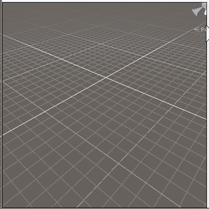
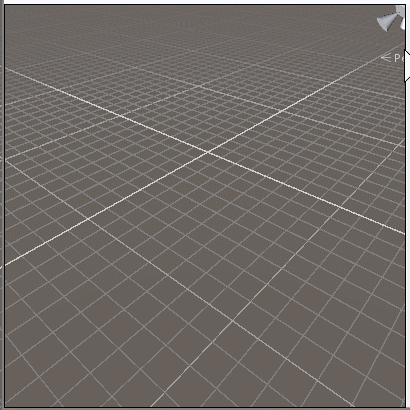

I'm Sander van Rossen, A generalist game engineer. I love the intersection of technology and art that is computer games, and everything, every discipline, that has something to do with it

EXPERIENCE
Briganti (Dungeon Alchemist)
 At Briganti I optimized several subsystems such as terrain editing (easily made this 100x faster) and implemented new features for Dungeon Alchemist such as a decal rendering and placement,
this was complicated by the fact that DA doesn't have collider meshes / LODS and supports user provided meshes. So there was no smooth surface to ray-cast against.
At Briganti I optimized several subsystems such as terrain editing (easily made this 100x faster) and implemented new features for Dungeon Alchemist such as a decal rendering and placement,
this was complicated by the fact that DA doesn't have collider meshes / LODS and supports user provided meshes. So there was no smooth surface to ray-cast against.

Roblox
 At Roblox, I helped optimize code, and implemented runtime mesh editing functionality for people making games and assets within experiences on the roblox platform.
At Roblox, I helped optimize code, and implemented runtime mesh editing functionality for people making games and assets within experiences on the roblox platform.
Additionally I held internal presentations on data orientated design principles.
Unity Technologies

At Unity I worked in several teams over the years, such as the animation team, the asset pipeline team, the scene management team and the core foundation team.
Gunship X
As an indie game developer I was one of the co-creators of the iOS game "Gunship X", using Unity.
I wrote the path-finding and AI, the shaders, audio scheduling, all the controls and the in-game UI.
Zombie Gunship
As an indie game developer I was one of the co-creators on the hit iOS game "Zombie Gunship" using a custom engine we wrote in C++. As far as we know, this was the first IOS game with post processing.
At the time the IPhone 2 was the target platform, and the IPhone 3 was just out.
I wrote the engine (including the rendering code / shaders), the path finding and various other bits.
SIDE PROJECTS
UI Framework (WIP)
In my spare time I've been working on an UI framework designed to rapidly make editors and tools.
The entire UI is defined using an immediate mode style, and it's rendered using a graphics API such as Vulkan or OpenGL. The idea is to eventually release this as a cross platform library to accelerate tool and editor development.
Realtime CSG
 

I created Realtime-CSG, a level editor plugin for use within Unity. The editing of the level uses a iterative and real-time, Constructive Solid Geometry (CSG), algorithm which I developed independently. It has been used in the development of in the valley of the gods (before the team was acquired by Valve), Gloomwood and a variety of other indie games.


Minecraft clone In 2003 I wrote an experimental minecraft clone in C++. The entire world was rendered in only 2 drawcalls using AZO (approaching zero overdraw) techniques, while using only 1gb of memory using compression. It had an infinite streaming world / far views and had sorted transparency (precalculated sorted geometry inside voxels + runtime sorting whole voxel chunks). It would render in less than 1ms per frame on 2003 hardware.
PRESENTATIONS
& ARTICLES
At GDC 2020 I gave a talk on a novel Realtime, iterative, Constructive Solid Geometry algorithm I developed.
At my blog I wrote about a highly optimized, hard to misconfigure, data structure for storing topology together with ready to render meshes.


In the book "Game Development Tools" I wrote an article about "Realtime Constructive Solid Geometry". Which is an older algorithm than I gave a GDC talk about.